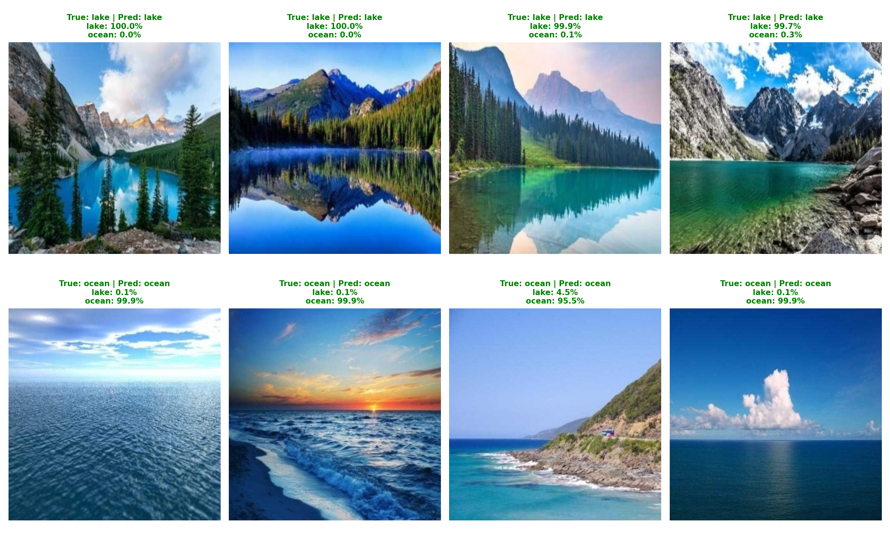
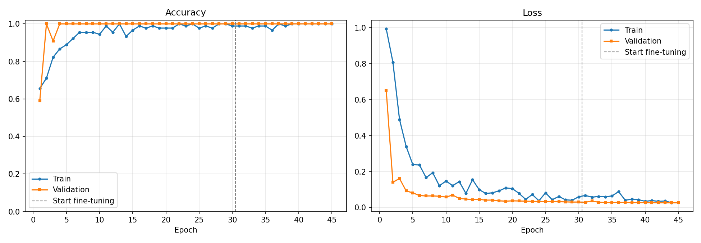
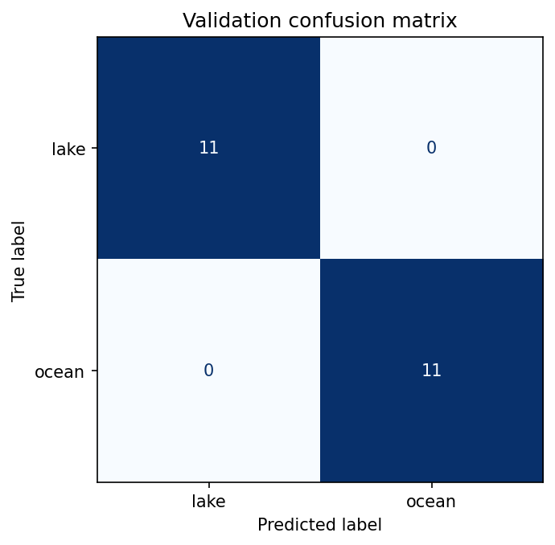

📷
Drop a photo here
or click to choose a file · you can also paste an image
Prediction
–
Choose a photo or click an example below.
The model only knows two classes, so every photo gets a lake % and an ocean % that add up to 100%.
Loading model…
Test images
The 8 test images from the project (4 lakes, 4 oceans). Click one to classify it.
Results
Trained in Google Colab with TensorFlow / Keras.
100%Test accuracy (8 / 8)
100%Validation accuracy (22 / 22)
90Training images
45Epochs (30 + 15 fine-tuning)



Model
Transfer learning: a CNN pre-trained on ImageNet, plus a small new classifier trained on our images.
| Input | 224 × 224 × 3 RGB image |
|---|---|
| Data augmentation (training only) | Horizontal flip, rotation ±18°, zoom ±10%, shift ±5% |
| CNN feature extractor | MobileNetV2 (154 layers, ImageNet weights); top 30 layers fine-tuned |
| Classifier head | Global Average Pooling (1280) → Dropout 0.4 → Dense 128 ReLU → Dropout 0.4 → Dense 2 softmax |
| Parameters | 2,422,210 |
| Optimizer | Adam: learning rate 0.001 (stage 1), 0.00001 (stage 2, fine-tuning) |
| Loss | Sparse categorical cross-entropy |
| Epochs / batch size | 30 + 15 (early stopping, patience 6) / 16 |
| Data split | 90 train · 22 validation (24% of train) · 8 test. Duplicates of test images were removed from training. |